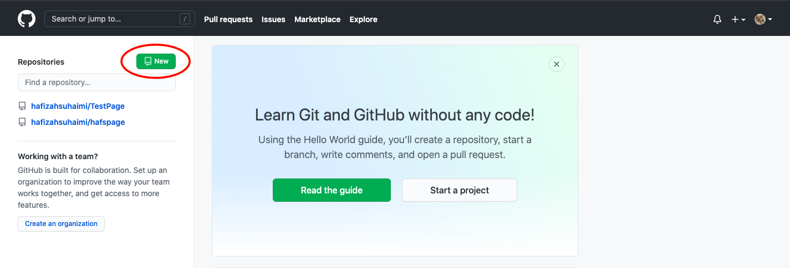
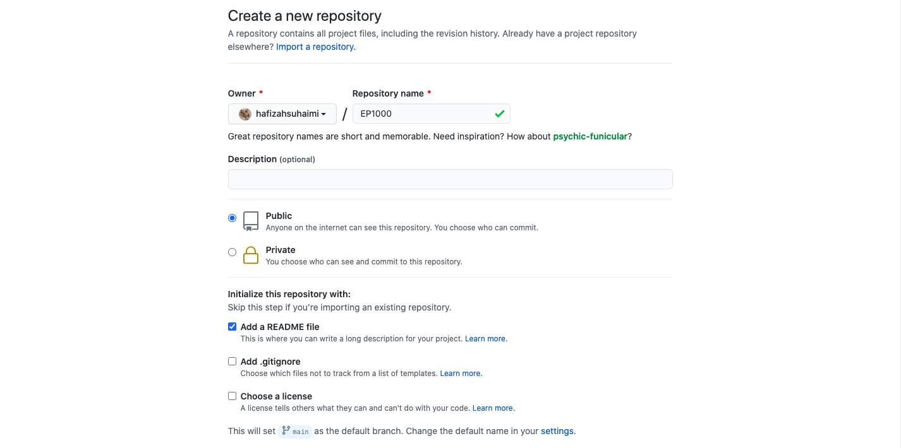
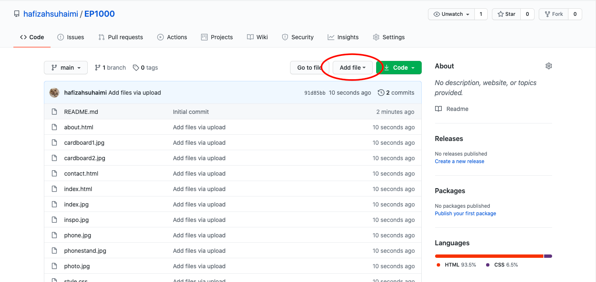
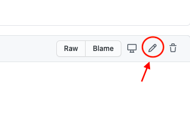
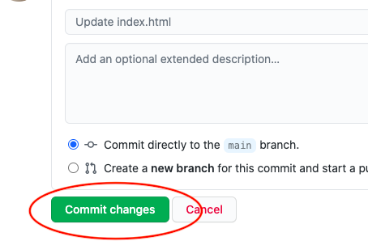
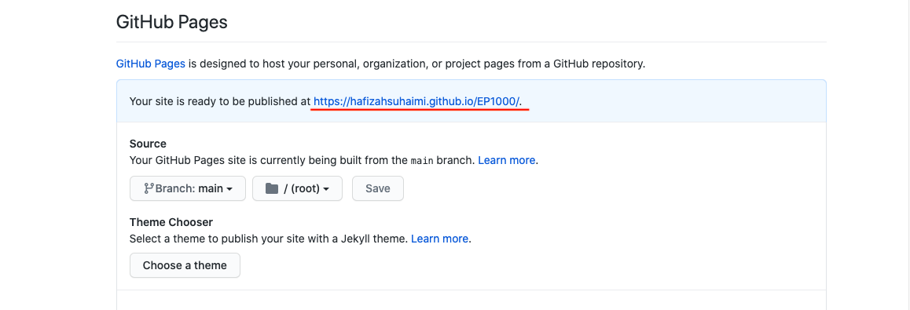

Version Control
Here I am going to show you how to create your own GitHub Page. First go on github, and create an account.
 Then, you create a new repository by clicking the 'new' button.
 Then, you can include your repository name, in this case I put mine as EP1000. Also, do note that this reprository name will be in ur website url, so give a short and to the point name. I made my website public so that it can be seen by others.
 To add an external file, press the 'add' button and you can drag your index.html and your css files that you have done into your repository. You can edit directly on the file in github if you want to make any changes. But do note that it takes a few minutes for the changes to show up, so just wait for a while.
To edit directly on your files, you first click on the file, press the pencil icon. Then after you have finished editing, click on commit changes.
|  |  |
To check your github website link, go to Settings and under GitHub Pages, select your main source as the source to enable GitHub Pages for this repository. After you have pressed save, your website URL will be displayed there! 
So, this was how I created this website you are currently on right now. This method of creating your GitHub website is easy for beginners to start on.